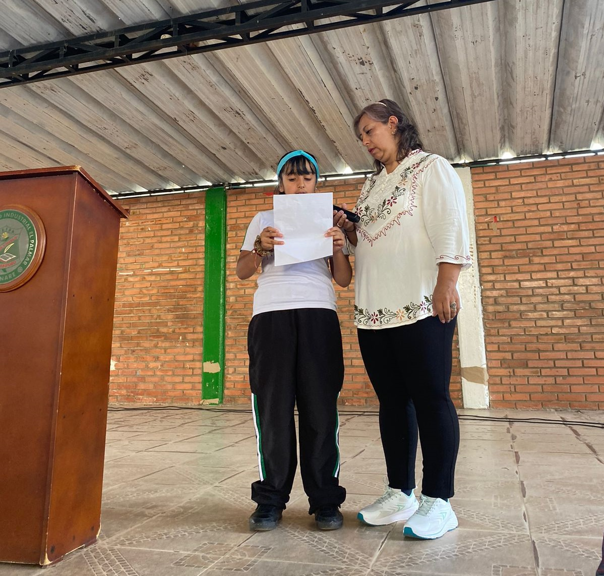
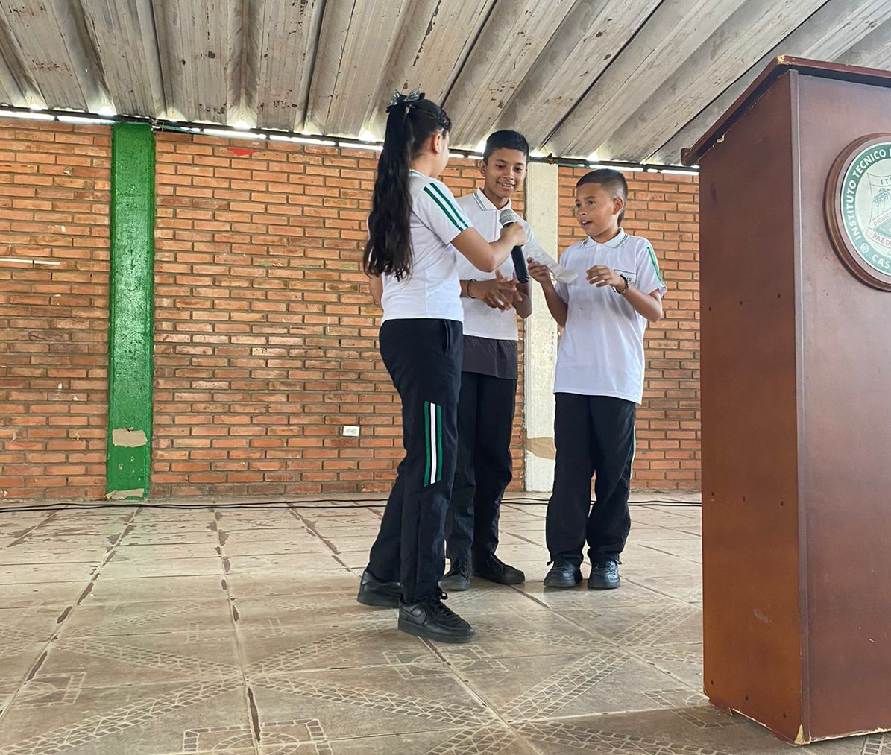

En un emotivo acto de unidad y celebración, nuestra institución conmemoró el Día de la Diversidad Étnica, la Ciencia y la No Violencia. La izada de bandera dio inicio el día 22 de octubre del año 2024, símbolo de nuestra compromiso con estos valores, fue el punto culminante de una mañana llena de reflexión y alegría.
Día de la diversidad étnica, la ciencia y la no violencia


Con la presencia de estudiantes, docentes y personal institucional, se resaltó la importancia de la tolerancia y la empatía en nuestra sociedad. A través de coplas y lecturas, se compartieron mensajes de respeto y comprensión hacia las diferentes culturas y formas de pensar. La diversidad étnica fue celebrada con entusiasmo, reconociendo la riqueza que nos brinda la variedad de tradiciones y costumbres. La ciencia fue destacada como herramienta para entender y mejorar nuestro mundo, mientras que la no violencia fue reafirmada como principio fundamental para construir una sociedad más justa y pacífica.
En este día, reafirmamos nuestro compromiso con la inclusión, la igualdad y el respeto mutuo. La izada de bandera simboliza nuestra convicción de que, juntos, podemos crear un futuro más brillante y armonioso para todos.